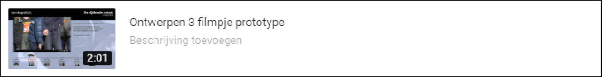
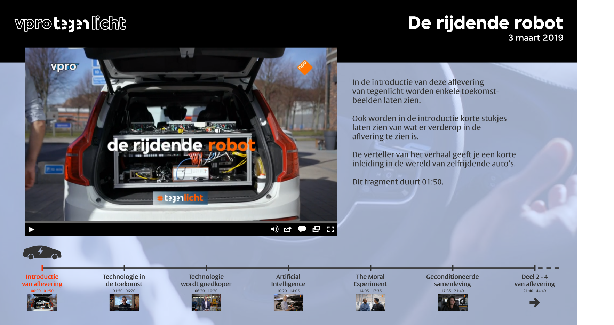

Opdracht: Maak een interface voor een verhaal naar keuze.
Ik heb gekozen om van de VPRO Tegenlicht aflevering 'De rijdende robot' een interface te maken. Hier onder is het linkje naar de aflvering.
Voor ontwerpen 3 moesten we een visie van 200 woorden schrijven waarin we kort uitleggen wat onze ontwerpvisie is en wat de ontwerpkeuzes waren voor het prototype.
Visie prototype: Mijn visie als ontwerper is dat een prototype functioneel, minimalistisch maar vooral overzichtelijk moet zijn.
Ik heb als casus gekozen voor de aflevering van VPRO Tegenlicht genaamd: "De rijdende robot". Ik heb er voor gekozen om de aflevering op te delen in hoofdstukken. Deze hoofdstukken heb ik weergegeven doormiddel van een tijdlijn. Omdat de aflevering gaat over auto's, heb ik er voor gekozen om het icoontje van een elektrische auto te gebruiken als hoofdstukaanduiding. Dit autootje rijdt van hoofdstuk naar hoofdstuk (achteruit en vooruit), als je klikt op de titel van een bepaald hoofdstuk. Onder de titel van het hoofdstuk is een tijdsaanduiding en een thumbnail van het hoofdstuk te vinden. Als je hovert met je muis over een thumbnail krijg je een kort stukje van het hoofdstuk te zien op de plek van de thumbnail. Alle kleuren en lettertypes horen bij de huisstijl van VPRO, bijvoorbeeld de oranje kleur of de broodtekst genaamd 'VPRO VESTA'.
De video staat groot en links uitgelijnd in het scherm met bijbehorende video-controls. Boven de video zijn het logo van VPRO, de titel, en de datum van de aflevering te vinden. Naast de video is een korte tekst over het hoofdstuk te vinden.
Voor Ontwerpen 3 moesten we ook een kort filmpje maken waarin we uitleggen hoe het prototype werkt. In het filmpje zijn enkele effecten te zien die niet verwerkt zijn in het prototype, daarom raadt ik aan om het filmpje even te bekijken.
Ik heb er voor gezorgd dat mijn ontwerp zo veel mogelijk lijkt op de website van VPRO Tegenlicht. Hier onder is een screenshot van mijn prototype te zien.
Dan natuurlijk de link naar mijn prototype!
Ik vond het leuk om weer eens compleet de huistijl van een bedrijf over te nemen en om er voor te zorgen dat het een product zou kunnen zijn die perfect op hun website past. ik heb veel geleerd en ben trots op het eindresultaat. Ik wil Marjolijn Ruijg ontzettend bedanken voor de begeleiding en coaching rondom dit vak!
6,0